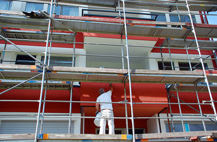
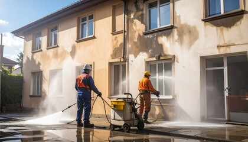
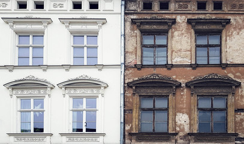
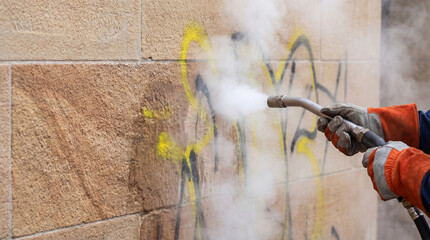
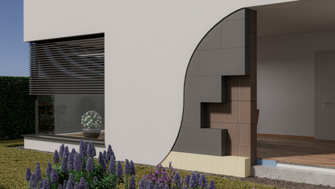

Fassadenanstrich & Fassadensanierung
Eine frische Fassade schützt das Gebäude vor Witterung und wertet es sichtbar auf. Wir reinigen, sanieren Risse und beschichten mit langlebigen Farbsystemen – passend zu Ihrem Fassadentyp.
Worum es geht

Die Fassade ist die Schutzhülle des Hauses – und das Erste, was man sieht. Ein guter Anstrich hält je nach Material und Wetterseite 10 bis 15 Jahre und bewahrt das Mauerwerk vor Feuchtigkeit. Wir beraten Sie zum passenden Farbsystem für Ihren Fassadentyp und planen die Arbeiten wetterabhängig, weil Fassadenfarbe nur bei geeigneter Temperatur und Trockenheit sauber aushärtet.
Für wen geeignet: Für Ein- und Mehrfamilienhäuser in Mannheim und Rhein-Neckar-Region – Putzfassaden, Sichtmauerwerk und Betonflächen, ob Neuanstrich, Auffrischung oder Sanierung einer rissigen Altbaufassade.
Ihr Nutzen auf einen Blick
- Realistische Lebensdauer: je nach Material und Wetterseite rund 10–15 Jahre
- Witterungsabhängige Terminplanung – wir arbeiten, wenn das Wetter es zulässt
- Gerüstbau koordinieren wir für Sie (eigene Leistung bzw. geprüfter Partnerbetrieb)
Was wir konkret anbieten
Fassadenanstrich – Neuanstrich und Auffrischung
Welche Farbe sinnvoll ist, hängt vom Untergrund ab. Silikatfarbe ist hoch diffusionsoffen und sehr langlebig – ideal auf mineralischem Putz. Silikonharzfarbe ist wasserabweisend und elastisch und überbrückt feine Risse, was sie für Altbauten interessant macht. Wir empfehlen das System, das zu Ihrer Fassade und Wetterseite passt.
Fassadenreinigung
Vor jedem Anstrich entfernen wir Algen, Moos und Witterungsablagerungen. Dabei arbeiten wir schonend und mit angepasstem Druck – zu hoher Druck schädigt den Putz und schafft neue Probleme statt sie zu lösen.
Rissfassaden-Sanierung
Nicht jeder Riss ist gleich: Oberflächliche Putzrisse lassen sich mit elastischen Beschichtungen überbrücken, tiefer reichende Setzungsrisse erfordern eine genauere Begutachtung und Sanierputz. Wir ordnen die Ursache ein, bevor wir beschichten.
Graffiti-Schutz und -Entfernung
Wir entfernen Graffiti, ohne die Fassade zu beschädigen, und tragen auf Wunsch eine Schutzbeschichtung auf. Sie macht erneute Verschmutzungen abwaschbar und lässt sich später wiederherstellen.
WDVS – Anstrich und Instandsetzung
Gedämmte Fassaden (Wärmedämmverbundsystem) brauchen abgestimmte Beschichtungen auf dem Dämmputz. Wo Spechte den Dämmputz beschädigen, ergänzen wir bei Bedarf ein Schutzgitter.
Der Ablauf
Begutachtung
Wir prüfen Untergrund, Risse und Wetterseite vor Ort und empfehlen das passende Farbsystem.
Gerüstbau
Sicheres Gerüst für sauberes Arbeiten – Koordination übernehmen wir.
Reinigung & Vorbereitung
Algen und Ablagerungen schonend entfernen, Risse sanieren, grundieren.
Beschichtung
Langlebiger Fassadenanstrich, in der Regel zweilagig für gleichmäßige Deckung.
Beispiele aus unserer Arbeit




Jetzt Fassadenanstrich anfragen
Oder kostenlose Fassadenbegutachtung vereinbaren. Wir besichtigen kostenlos und erstellen Ihnen ein verständliches Festpreisangebot.
Jetzt Fassadenanstrich anfragen Kurzfristig? ☎ 0621 1234567